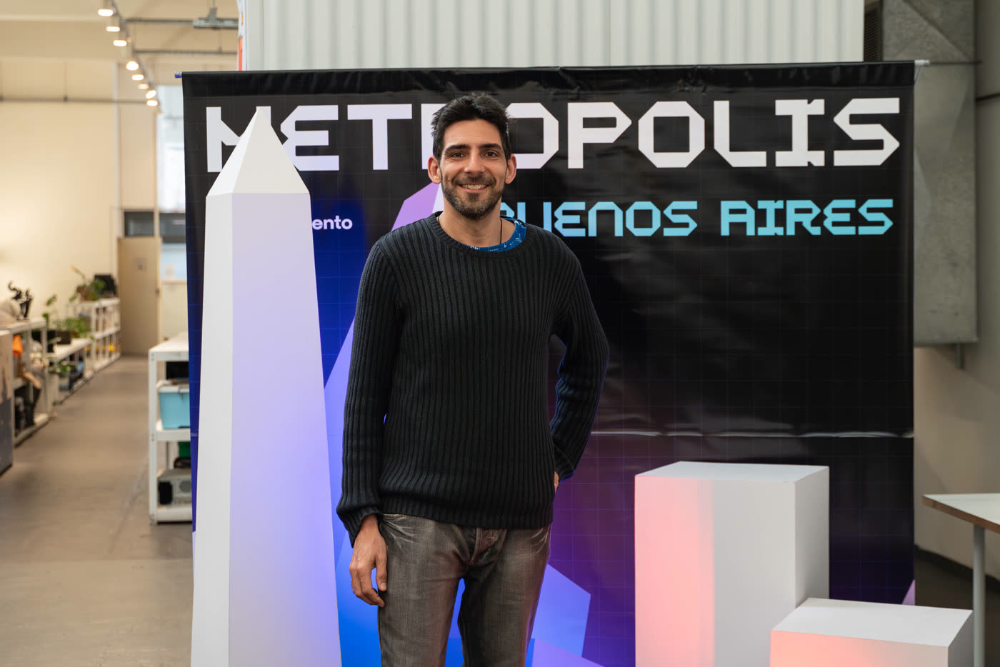
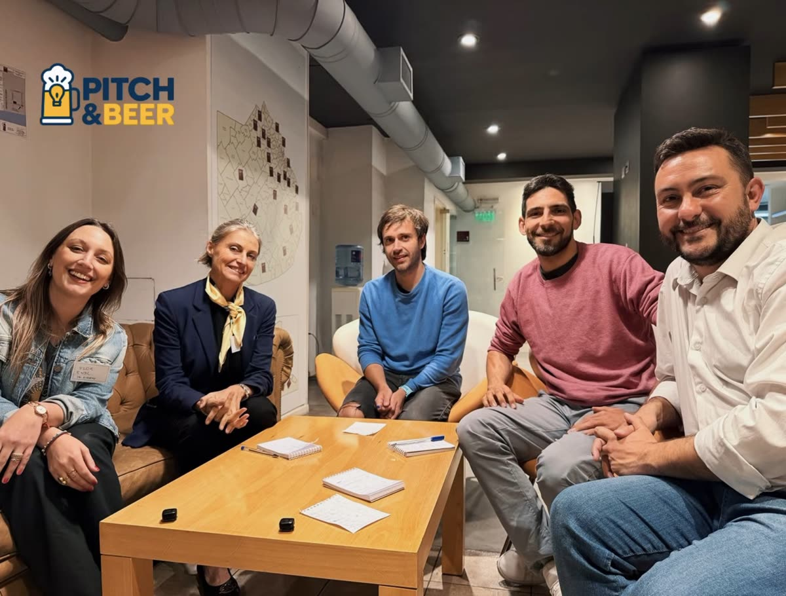
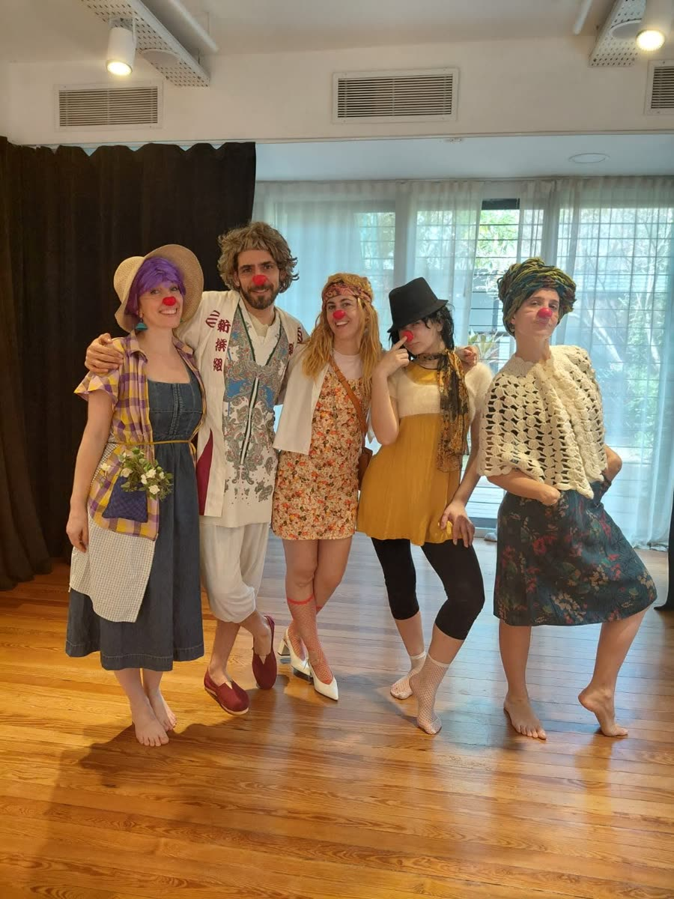
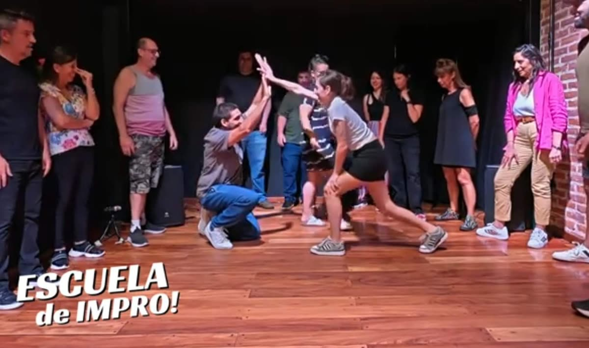

Gabriel
Aufgang
Acompaño a personas y equipos a encontrar nuevas posibilidades, liderar con más claridad y construir mejores cosas juntos.
Las mejores decisiones empiezan con una buena conversación.

Más de veinte años creando con otros.
Latinoamérica como territorio
Mentorías, charlas y colaboraciones en programas de emprendimiento, comunidades y hackatones de la región. En cada espacio con un rol distinto: a veces acompaño equipos, a veces subo a un escenario, a veces ayudo a que el encuentro suceda.
- ETH Uruguay Mentor y colaborador · 3 años
- ETH Lima Mentor y speaker
- Aleph Hackathon Mentor
- Founder School Speaker · varias ediciones
- Startup World Cup Speaker · impro aplicada a emprender

Las mejores decisiones empiezan con una buena conversación.
Lo que me interesa
La conversación es el punto de partida para escuchar, comprender, decidir y construir con otros.
Me interesa especialmente lo que sucede entre las personas: cómo se vinculan, cómo se comunican, cómo combinan sus talentos y cómo atraviesan juntas los desafíos.
Mi recorrido
Durante años trabajo creando experiencias, marcas y proyectos. Con el tiempo, y especialmente a partir de liderar equipos y emprender, presto cada vez más atención a algo que siempre está presente: las personas que hacen que las cosas sucedan.
Sus conversaciones, sus decisiones, sus miedos, sus talentos y la manera en que se vinculan.
Hoy gran parte de mi trabajo consiste en generar espacios donde esas personas puedan encontrarse, pensar y construir nuevas posibilidades.
Creando en 5SEIS
Algunas experiencias de la agencia que fundé. Trabajo de equipo: donde participé directamente, lo indico.
Más proyectos en 5seis.com
Personas que acompañé
Lo que dicen algunas de las personas con las que trabajé en mentorías y proyectos.
Charlas, talleres y experiencias participativas.
Más de veinte encuentros como speaker, mentor y facilitador en espacios de aprendizaje, emprendimiento, creatividad y liderazgo.
Ver todas las charlas →Improvisación, clown y juego.
El teatro de improvisación y el clown me enseñan a escuchar de verdad, estar presente y animarme a lo inesperado. A aceptar las propuestas de otros, construir sobre ellas y entender que equivocarse también puede abrir caminos.
En el trabajo llevo esa experiencia a las conversaciones y los equipos: menos necesidad de tener todo resuelto, más curiosidad, confianza y capacidad de jugar juntos.
Espontáneo antes que ingenioso.


Práctica
Desde 2023 me formo en improvisación, humor con máscaras y clown, con Lucho Barreda, Kevin Batalla y otros docentes. Ensayo y salgo a escena en matches, jams y otros formatos.
Facilitación
Doy clases y talleres de improvisación en espacios educativos, como Taller Maswitch, Escuela Bereshit y Fundación Cimientos.
Aplicada al trabajo
Llevo la impro a equipos y organizaciones: Impro Laboral en Nerdearla 2025, en la conferencia anual de Reclutando Latinoamérica y una charla de impro aplicada a emprender en Startup World Cup.
Las mejores decisiones empiezan con una buena conversación.
¿Hay algo que estás queriendo construir, transformar o descubrir? Un desafío, un proyecto, un equipo, una charla. Hablemos.
Empecemos a conversar → o escribime a hablemos@gaufgang.com